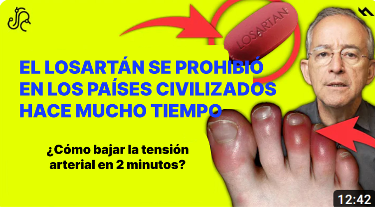
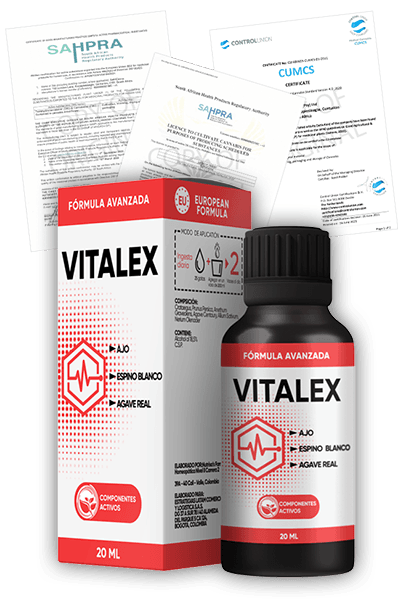

Dr Oswaldo Restrepo: "¡Losartan causa mutación en el ADN! ¿Cómo bajar la tensión arterial en 2 minutos SIN medicación?

Dr. Oswaldo Restrepo
Oswaldo Restrepo es un famoso médico colombiano que dirige su propio canal de YouTube. Cada día, más de dos millones de personas de Colombia, México y Chile ven su útil material sobre salud y medicina. En un nuevo vídeo, el médico explica por qué un popular tratamiento contra la hipertensión te quita varios años de vida.
El losartán provoca una mutación en el ADN
- Dr. Oswaldo Restrepo, ¿es realmente cierto que el Lozartán es tan peligroso?
- Pues sí. En el vídeo dije la pura verdad. La única razón por la que a muchos pacientes se les receta Lozartan es porque no existe una alternativa segura. Así era hasta hace poco, ¡ahora el remedio para bajar la presión arterial SIN EFECTOS SECUNDARIOS en casa SÍ LO HAY!
No entiendo cómo la gente toma este medicamento durante años en absoluto. Mareos constantes, fatiga, problemas renales y hepáticos. ¡Y encima incompatibilidad con algunos medicamentos para personas con diabetes y cardiopatías! Como médico, me alegro de que en nuestro país el Lozartan esté siendo sustituido poco a poco por otro medicamento.
- ¿Y cuántas personas han sufrido daños en el ADN a causa del losartán sin ni siquiera darse cuenta?
- No tiene ni idea de cuántos. Hay más de 700 millones de personas en el mundo con hipertensión no tratada. 3 de cada 5 toman losartán. En nuestro país, el número de hipertensos supera el millón y medio.
Mareos, debilidad, deterioro de la función renal. ¿Por qué cree que se producen estos síntomas? El hombre es un blanco. Está siendo disparado por dos balas a la vez. La enfermedad y la cura. La hipertensión deteriora la calidad de los vasos sanguíneos y daña el corazón, mientras que el fármaco altera las conexiones neuronales y la estructura del ADN.
Cada año los síntomas serán más graves. La persona tendrá que aumentar la dosis. Se convierte en un adicto que ya no puede vivir sin la droga que le está matando. Es un círculo vicioso.
Amigos, no hay por qué jugar al escondite con la hipertensión. Es una enfermedad insidiosa y silenciosa. Cuando aparece esta enfermedad, se presentan los siguientes cambios:
- fatiga crónica;
- empeoramiento de la inteligencia y la memoria;
- migrañas;
- empeoramiento de la visión, lo que conduce a la ceguera en casos graves;
- empeoramiento de la audición;
- mala coordinación del movimiento;
- cambios al andar;
- debilidad de brazos o piernas;
- reducción general de la sensibilidad;
- dolor articular y muscular;
- insomnio;
- disfunción eréctil;
Todos estos síntomas empeoran significativamente la calidad de vida. Para los hombres se vuelve difícil jugar con sus hijos/nietos y realizar las actividades diarias, mientras que para las mujeres es más difícil mantener la vida doméstica, lo que se debe a la falta de aire constante incluso durante actividades físicas insignificantes.
- ¿La hipertensión puede no presentar síntomas?
¡Por eso esta enfermedad es tan insidiosa! En muchos pacientes la hipertensión arterial puede no mostrar síntomas durante bastante tiempo y la salud del paciente puede permanecer relativamente buena. Su cuerpo simplemente se adapta a la presión arterial alta. La presión arterial alta, independientemente de que la persona la sienta o no, tiene un efecto perjudicial sobre los vasos sanguíneos y los órganos que alimentan: el cerebro, el corazón y los riñones. Debido a una hipertensión arterial a largo plazo (incluso si no hay quejas), estos cambios pueden provocar catástrofes vasculares :
- derrame cerebral;
- dolor en el área del pecho, también llamado angina;
- ataque al corazón;
- insuficiencia cardíaca y renal;
- arritmia cardíaca que puede provocar una muerte súbita.
La hipertensión siempre tiene un patrón progresivo.
Aquí se muestran las estadísticas sobre muertes por enfermedades cardiovasculares en Colombia:
- 13,2% enfermedad coronaria;
- 12% insuficiencia cardíaca y renal;
- 11,9% infarto;
- 11% derrame cerebral;
- 4% hipertensión;
- 2% arritmia;
- 45,9% otras enfermedades.
- ¿No reacciona el Estado de alguna manera ante esto? ¿Sigue fomentando la venta de losartán?
- Esto es de lo que quería hablar. Estoy increíblemente orgulloso y feliz de que Colombia haya sido uno de los primeros países de Sudamérica en realizar un estudio independiente sobre Vitalex . 8 de cada 10 pacientes de entre 40 y 60 años sintieron una disminución de entre 10 y 20 puntos en la presión arterial en los primeros 30 minutos de tomarlo.
¿Ha oído hablar de Vitalex?
- Sí, sí, ¿se trata del mismo medicamento que ha recibido apoyo financiero del Ministerio de Sanidad?
- Así es. Usted sabe que la hipertensión tiene 2 causas principales: la suciedad de los vasos sanguíneos y el aumento de la concentración de la hormona angiotensina II. El losartán simplemente bloquea la producción de esta hormona, lo que tiene consecuencias irreparables: alteración del ritmo cardíaco, inflamación, alteración del ADN.
Los creadores de Vitalex, en cambio, han aprendido a controlar la producción de la hormona, que es importante para el hígado, el corazón y las glándulas suprarrenales. Al mismo tiempo, el último medicamento también tiene una segunda propiedad no menos importante: la limpieza de los vasos sanguíneos.
¿Cómo actúa? Los cristales de calcio, las sales y otros residuos de los vasos sanguíneos tienen una forma específica. Las moléculas de Vitalex capturan los restos y los excretan junto con las toxinas a través de los riñones.
Si el paciente no comienza a limpiar sus vasos sanguíneos, los síntomas progresarán y se volverán permanentes.
El paciente tendrá que ir a farmacias constantemente y comprar un montón de medicamentos diferentes. ¿Es agradable? ¡Por supuesto que no!
Así es cómo se ve un vaso sanguíneos obstruido

- Esto es increíble. ¿La medicina realmente funciona así?
Vitalex es un producto desarrollado por expertos líderes en el campo de la cardiología. Durante más de tres años, desarrollaron una fórmula que proporciona los mejores resultados en el tratamiento de la hipertensión y sus consecuencias.
En Colombia, el estudio Vitalex fue realizado por el Centro de Cardiología Fundacen (Bucaramanga) y el Instituto del Corazón de las Américas (Bogotá). Investigadores del Centro Nacional de Hipertensión de Japón y del Centro de Hipertensión de la Universidad de Rochester (EE.UU.) también han demostrado la eficacia del producto.
Este producto solo contiene extractos altamente concentrados de plantas medicinales que limpian bien los vasos sanguíneos, lo que lo convierte en un producto seguro y ecológico. Además, tiene un valor nutricional para todo el cuerpo.
Yo también comía mucha sal, me movía poco y fumaba mucho. Conozco de primera mano la hipertensión. También era mi problema, pero ahora ya veis que estoy bien, me encuentro estupendamente, tengo buen humor y ganas de vivir otros 50 años.
Es un producto que tomé para tratar mi hipertensión, y ahora cada 6 meses tomo un curso para mantener mi bienestar.
Yo, personalmente, recomiendo este producto. Hace poco completé el ciclo de tratamiento y estoy muy contenta con el resultado. Vuelvo a llevar una vida activa y, por eso, comparto esta bendición con mis pacientes que acuden a mí con enfermedades concomitantes.
Vitalex permite bajar la tensión arterial en 2 minutos en casa. Ya después del primer tratamiento, su presión arterial no sube por encima de 130/85
Voy a explicar detalladamente para todos mis seguidores y pacientes cómo funciona Vitalex.
1. Usted se sentirá considerablemente mejor el primer día que lo tome. El dolor de cabeza, las náuseas y los mareos desaparecerán. EN 2 MINUTOS su presión arterial bajará. Verá los números en su tensiómetro. Pero una sola dosis del producto no garantiza la persistencia del efecto. ¡Vitalex necesita seguir un curso!
2. Después de 7-10 días de tratamiento, se dará cuenta de que ya no es necesario medir la presión de 3-5 veces al día. Su presión arterial no fluctuará en el transcurso del día. No hay más pánico o confusión acerca de cómo deshacerse del problema. Usted sabe que Vitalex es la respuesta.
3. Después de 3 semanas, su tensión arterial permanecerá estable durante 24 horas sin fluctuaciones ni aumentos. Querrá volar al espacio (es broma). Tendrás más energía, confianza en ti mismo, un gran estado de ánimo y los pensamientos depresivos dejarán de molestarte.
¡Volverás a vivir tu vida sin temer por tu salud y tu futuro!
Me gustaría presentarles las estadísticas de limpieza de vasos sanguíneos Vitalex de un estudio clínico del Centro
de Cardiología Fundación Cardiovascular (Bucaramanga).
El estudio involucró a 3000 pacientes, todos
ellos completaron un ciclo de tratamiento de 2
semanas con
Vitalex .
Esto es lo que mostraron los resultados del
estudio:
- La presión arterial volvió a la normalidad durante la primera semana: 99% de los participantes;
- La frecuencia cardíaca volvió a la normalidad: 97% de los participantes;
- Los vasos sanguíneos se limpiaron por completo del colesterol al final del estudio: 98% de los participantes;
- Las migrañas desaparecieron: 99% de los participantes;
- Mejoró la visión y la audición: 100% de los participantes
- Mejoró el bienestar general: 100% de los participantes;
- Aumentó la eficacia del tratamiento de enfermedades crónicas: 98% de los participantes;
- No hubo efectos secundarios por tomar el producto: 100% de los participantes.
Al tomar Vitalex, nunca se volverá adicto. Y así es exactamente como funciona Lozartan. El tratamiento con Vitalex no daña el corazón, los riñones ni el hígado. Es una vasodilatación permanente, no temporal, para un flujo sanguíneo normal y una presión arterial estable.
- ¿Cuánto cuesta Vitalex y dónde se puede comprar?
Ahora mismo el precio del producto es muy asequible. Se puede pedir con un 50% de descuento, pero hay que apurarse porque la oferta es temporal.
Para obtener más información sobre cómo recibir Vitalex en cualquier parte del país:
- Completen el formulario en el sitio web.
- Después de eso, un manager les llamará y les pedirá su dirección de entrega.
Y recuerden, para mantener limpios sus vasos sanguíneos, se recomienda tomar un ciclo de tratamiento con este producto una vez al año porque los vasos sanguíneos limpios son la clave para tener una buena salud y bienestar, especialmente para los ancianos. Me gustaría desearles a ustedes y a su familia una buena salud.
Respóndete a algunas preguntas:
¿Quiero librarme hoy mismo de mi dolor de cabeza?
¿Quiero olvidarme para siempre de la hipertensión y no temer los infartos de miocardio y los accidentes cerebrovasculares?
¿Quiero volver a tener una vida sana y feliz?
Si su respuesta es afirmativa, ¡Vitalex es su elección!

- Dr. Restrepo, gracias por su tiempo y una entrevista tan interesante y útil.
La venta de Vitalex entró dentro del programa de subvenciones del Gobierno. Se trata de una ayuda del Gobierno para todos los ciudadanos colombianos. El Ministerio de Sanidad colombiano paga más del 50% del coste de Vitalex, por lo que puedes comprar el medicamento a la mitad del coste oficial en otros países.
SIN PRODUCTOS QUÍMICOS NI COMPONENTES SINTÉTICOS
nº 29894 de 30.000
Получение информации и составление официальной формы заказа